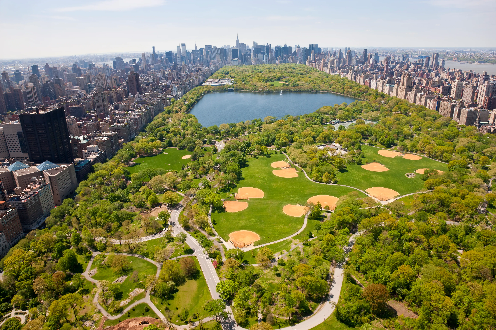
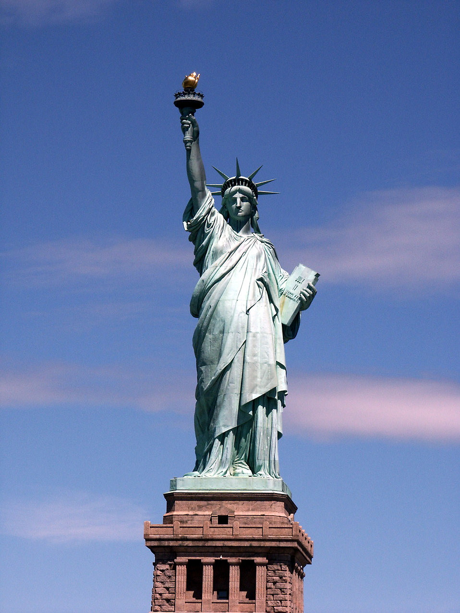
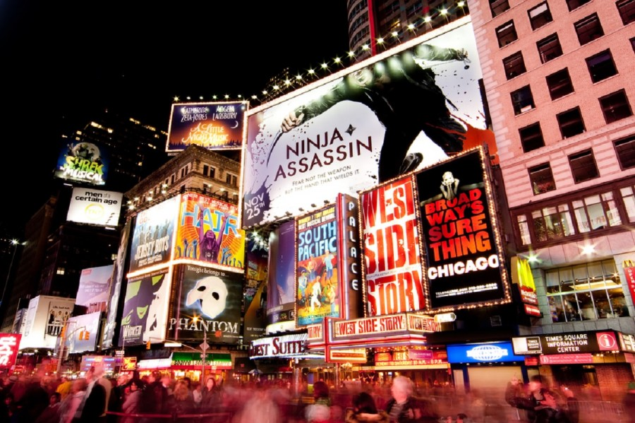

Die Brooklyn Bridge – die bekannteste Brücke in New York
Ein offizielles Wahrzeichen der Stadt: die
Brooklyn
Bridge – sie ist
eine
der vielen wunderschönen
Brücken von New York. Ganz neu und beliebt sind
Touren über die Brooklyn Bridge bis nach Brooklyn. Dafür empfehlen wir euch den schönen Brooklyn
Bridge
Park sowie Brooklyn Heights.
Mein Insider-Tipp: Wir lieben es, mit den Citi Bike über die Brooklyn Bridge
Richtung
Brooklyn zu
fahren
(mehr zum Stadtfahrradprogramm Citi Bike erfährst du hier) und auf dem
Rückweg die Manhattan Bridge zu nehmen. Dann habt ihr nämlich einen tollen Blick auf Augenhöhe auf
die
Brooklyn Bridge. Traumhaft!

Central Park: der größte Park in Manhattan
Der Central Park ist die grüne Lunge
der Stadt und erstreckt sich
von
der 59. bis zur 110. Straße
sowie von der 5th bis zur 8th Avenue.
Er ist von Stadtplanern angelegt worden und ein beliebtes Ausflugsziel der New Yorker. Richtig
Spaß
macht die große Joggingrunde von knapp 10 Kilometern, die einmal um den Park herum führt.
Wenn es etwas gemütlicher zugehen soll, kann man sich auch ein Ruderboot ausleihen und auf den
Seen
rumpaddeln – auf jeden Fall darf er auf keiner Sightseeing-Liste fehlen!
Mein Insider-Tipp: Richtig Spaß macht auch das Erkunden des Parks per Fahrrad.
Es
gibt viele
ausgeschilderte Fahrradwege – ihr werdet überrascht sein, wie groß der Park
ist.

Freiheitsstatue
Die Freiheitsstatue ist das Symbol für
Freiheit in
den Vereinigten
Staaten. Sie war ein um zehn Jahre
verspätetes Geschenk der Franzosen
an die Amerikaner zum 100. Jahrestag der Unabhängigkeitserklärung und wurde am 28.
Oktober 1886
eingeweiht. Die Statue of Liberty auf der Insel
zu besuchen empfehlen wir nicht unbedingt. Es ist immer voll und viel los. Nicht, dass sie nicht
sehr beeindruckend wäre, aber die bessere Alternative ist eine Bootstour
um Manhattan, bei der es einen Zwischenstopp an der Freiheitsstatue gibt!

Kunst & Kultur in New York
Wenn dich Kunst und Kultur interessiert, wird New Yorkdich begeistern. Viele weltbekannte Museen wir das Metropoliten Museum of Modern Art, das MoMa oder Guggenheim Museum aber auch Galerien und Ausstellungen sind hier zu finden. Die Kunst & Kultur in New York gilt als eine der Besten auf der Welt.
